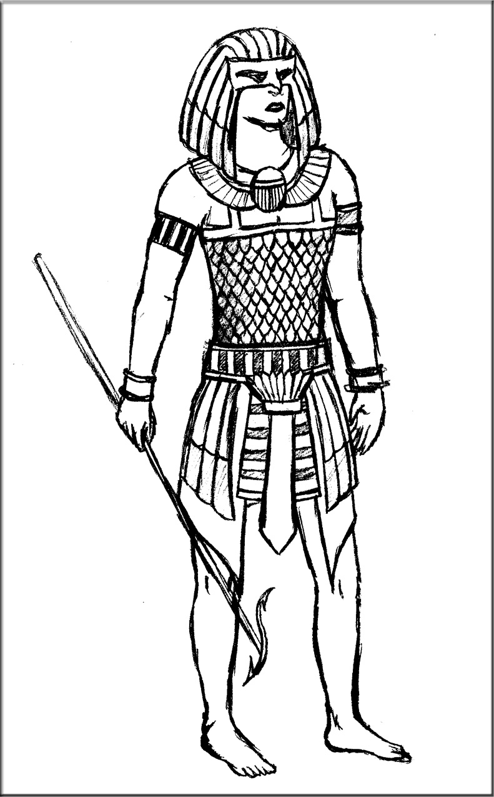
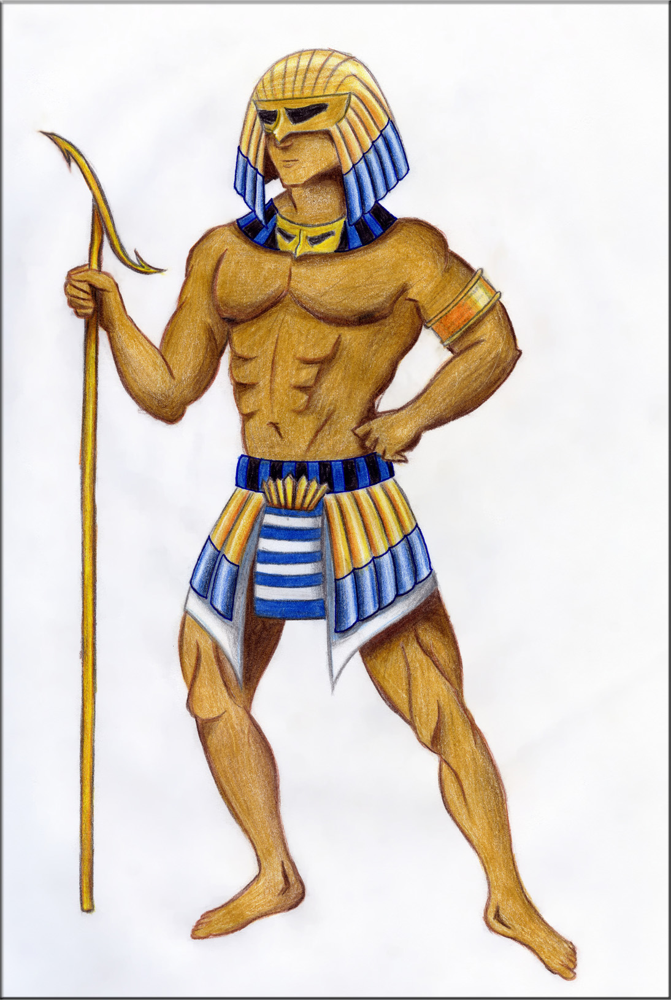
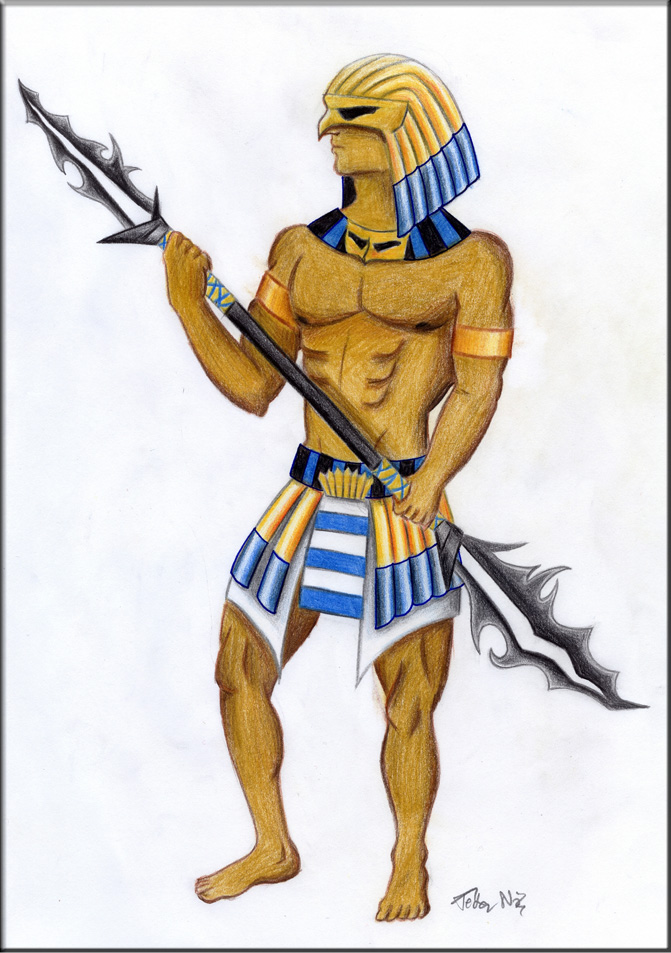

Az Elsõk megalkotása - W.I.P.
A rajz legnehezebb része a helyes arányok megtalálása. Nem valami kellemes negyedszer újrakezdeni, de ha sikerült
megfelelõen felvázolni, utána könnyen megy a munka és az mindenért kárpótol. A színezés már-már kikapcsolódásnak számít.
Két délután alatt tudtam a képet úgy megcsinálni, hogy elégedett legyek vele. Nagyjából...:D Igaz, fedezek fel apróbb
hibákat, de ezekbõl a hibákból tanulok, és a késõbbiekben szem elõtt tartom majd õket.
Az alapötlet nem az enyém, én csak kisebb tanácsokat ajánlottam, amik végül többnyire meg is valósultak. A ruhával
kapcsolatos ötleteket játékok nameg persze õsi egyiptomi viseletek adták. Az elsõ vázlatok Zoli szerint nem voltak elég
izomsak (visszagondolva szerintem sem), ezért kerestem olyan képeket amik izmos pasikat ábrázoltak...:) Végleges
felépítését az õ segítségükkel érte el a figura.
A lándzsát Zoli tervezte.:) Szerintem ad egyfajta darkos jelleget a képnek, és igyekeztem a színeket összhangba hozni
a ruhán és a fegyveren (Ami mondjuk evidens...:D). A sisak ugyancsak az õ terve, meghatározza az egész alak karakterét.
Kihívás volt számomra, mert eddig még nem igazán rajzoltam így, más tervei alapján, de úgy gondolom, összességében azért
elég jól sikerült.:)
Az Elsõk kinézetének tervezése
|  | A legelsõ változat, amolyan próba a késõbbi kinézethez |
|  | Kicsit javított, színes változat. Itt már kezd humanoid kinézete lenni a karakternek |
|  | Harmadik, végleges terv. Az õsi Elsõk alapkinézete elkészült :) |